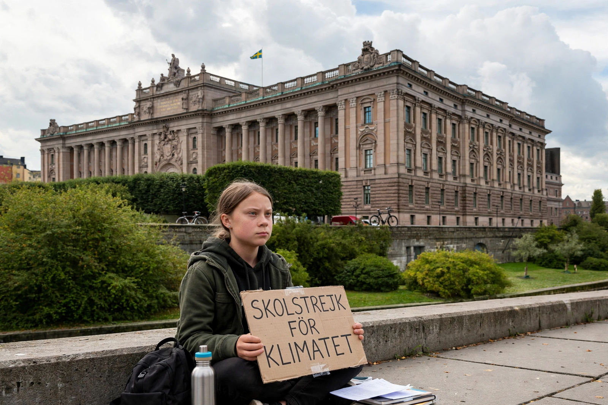

Greta Thunberg
| Greta Thunberg | |
|---|---|
| Born | 3 January 2003, Stockholm, Sweden |
| Known for | School strike for climate; Fridays for Future |
| Notable speech | UN Climate Action Summit, 2019 |

Greta Thunberg (born 3 January 2003) is a Swedish environmental activist who, as a school student, began a solitary protest outside the Swedish parliament in August 2018 demanding stronger action on {L('Climate_change')}. Within a year her 'school strike for climate' had grown into the global Fridays for Future movement involving millions of young people.
Thunberg's blunt speeches to political and business leaders — most famously at the UN Climate Action Summit in September 2019 — made her the defining youth voice of the climate movement, and a polarising figure in climate politics.
Rise of the movement
Inspired partly by American student activism, Thunberg sat outside the Riksdag during school hours with a hand-painted sign reading 'Skolstrejk för klimatet' (school strike for the climate) in the run-up to Sweden's 2018 election. Media attention spread the idea; by the global strikes of March and September 2019, protests drew crowds estimated in the millions across more than a hundred countries.
She addressed the UN climate conference in Katowice (2018), the World Economic Forum at Davos, and several parliaments, travelled to New York by racing yacht to avoid flying, and was named Time magazine's Person of the Year for 2019, its youngest ever recipient.
Message and criticism
Thunberg's core message is that leaders should 'unite behind the science': treat the climate crisis as an emergency, follow the {L('IPCC','IPCC')} carbon budgets, and stop what she calls creative accounting and empty promises. She has spoken openly about her Asperger syndrome, describing it as a gift that helps her see the issue plainly.
Her prominence has drawn intense hostility as well as admiration, including attacks from political leaders; adult critics variously question her influence on policy and her movement's tactics. Fridays for Future continued campaigning into the 2020s, broadening into climate-justice themes.
See also: Climate change · Global warming · IPCC · Environmentalism